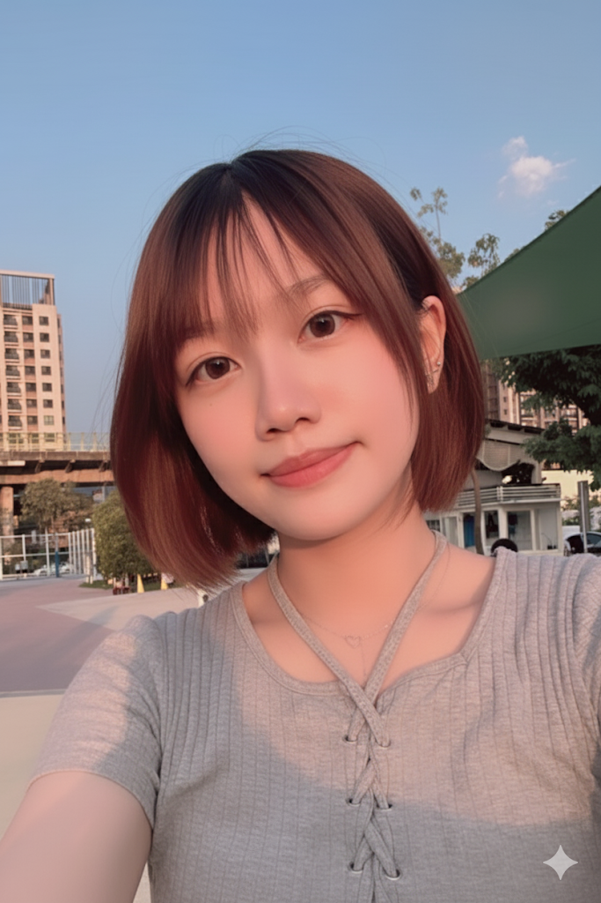

我的AI個人照
這張照片中的女孩站在戶外，背景是晴朗的天空和現代建築。她穿著簡單的灰色上衣，笑容溫柔，頭髮短而俐落，透著自然的輕鬆感。陽光照射在她的臉上，顯得格外清新怡人。
分享我的創意與故事，記錄人生每一個精彩瞬間
我熱衷於分享創意與故事，將人生中的每一個精彩瞬間記錄下來，無論是日常的點滴還是心靈的碰撞。我相信每個故事背後都有值得傳遞的價值與情感，透過文字或影像，將我的思考與經歷呈現給世界，激發共鳴與啟發。每個創作都是對生活的詮釋，也是一段自我成長的旅程。

這張照片中的女孩站在戶外，背景是晴朗的天空和現代建築。她穿著簡單的灰色上衣，笑容溫柔，頭髮短而俐落，透著自然的輕鬆感。陽光照射在她的臉上，顯得格外清新怡人。